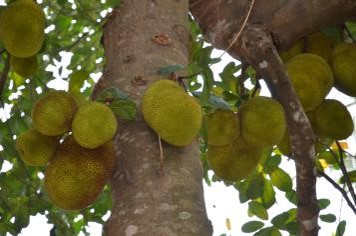
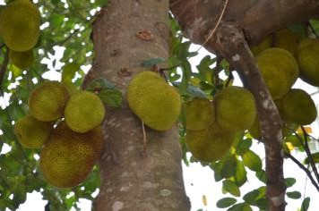

1. ミャンマー概要
1.1 地勢：
タイ・ラオス・中国・インド・バングラディシュの5か国に国境を接する。南北に2000キロで、国土は日本の1.8倍
→山間部の北部は温帯。中部は暑くて乾燥、南部は熱帯。近隣国の文化が入り混じる
1.2 人口：
5,114万人
→若年人口が多く、人口ボーナス高
1.3 首都：
ネピドー
→2006年にヤンゴンから遷都。当時の軍のトップ「タン・シュエ将軍」が占星術に影響を受けたとも、お告げがあったことが理由とも言われている。森林を切り開いて人工的に作られたまちなので、すべてが広々
2. ミャンマー文化
>2.1 言語:
ミャンマー語のアルファベットは33文字。アルファベットに母音(7つ)や日本語にはない声調記号、複合記号等を併せて発音が決まる。語順は、日本語と同じで、主語が1番、目的語などが間に入って、動詞は最後
→文字と発音は全く異なるものの、文法が似ているため、ミャンマー人が日本語を習得するのは、他の外国人よりも早い
2.2 食事:
ミャンマー人にとって、食事は非常に重要。ミャンマー語で「こんにちは」はမင်္ဂလာပါ(ミンガラーバ)だが実際にはほとんど使われない。
ထမင်းစားပြီးပြီလား（タミンサピービラ→ご飯食べましたか？）の方が一般的
→地理的・気候的に食料に恵まれているため「飢餓を経験したことのない国」とも言われる
 

2.3 名前と八曜日:
- ミャンマー人には（一部の中国系などを除いて）苗字がない
→アウン・サン・スー・チーさんの本当の名前は「スー・チー」のみ。アウン・サン将軍の娘なので便宜的に「アウンサンスーチー」と呼ばれている
- ミャンマー人は八曜日の概念を採用
→水曜日が午前と午後に分かれる
- ミャンマー人は自分が何曜日に生まれたか例外なく認識している
- 基本的にミャンマー人の名前は自分が何曜日に生まれたかを表している
→アウン・サン将軍の場合「アウン」は日曜日、スー・チーさんの「スー」は火曜日生まれであることを表す
次の項目に進む前に、自分が何曜日に生まれたのかを調べておこう！
2.4 信仰と八曜日:
- 経験深い上座部仏教徒のミャンマー人の生活には信仰が根付いている。子供は一度は出家。大人になっても休暇をとって、短期出家することもある
- パゴタへの寄進は信仰心の高さの象徴。ヤンゴンのシェッタゴンパゴタの金色は本物の金。塔の先をよくよく見ると、寄贈された宝石やら黄金やらがぶら下がっている
- パゴタへの入場は裸足。曜日ごとのシンボルがまつられ、自分の生まれた曜日のシンボルに対して祈りをささげる
- 血液型や星座占いのように、曜日ごとの性格判断や占いは人気。例えば火曜生まれは勇敢な性格、火曜日と木曜日、土曜日と水曜日は相性がよいなど
来るべき（？！）ミャンマー旅行に備えて、自分のシンボルと方角を知っておこう！
3. ミャンマー観光
3.1 ゴールデンロック:
- ゴールデンロック（チャイティーヨーパゴタ）は仏教徒の巡礼地の一つ
→現地の人によれば、仏陀の髪の上に、岩が乗っていることで重力を無視できるらしい
- 巡礼者によって岩に金箔が張られることで金色となっている
→触れることができるのは男性のみ。女性は近くに行くことも不可
- ゴールデンロックまで自家用車で行くことはできず、麓の町で共同トラックに乗り換える必要
→トヨタでは考えられないほどの座席や運転の安全性は低い
→40分の道のりは「安全の確保されていない ビッグサンダーマウンテン！
参考動画